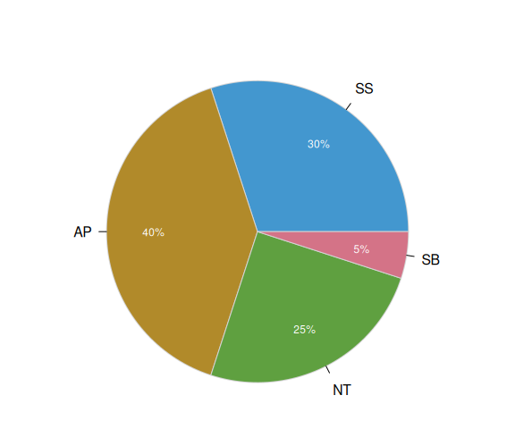
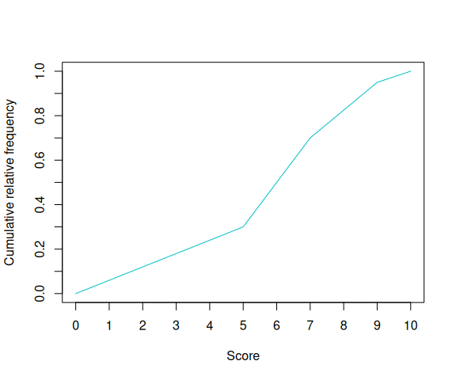

5 Descriptive Statistics and Regression exam (2023/03/23)
Exercise 5.1
The chart below shows the percentage of grades in a Statistic course with 60 students.

- Plot the ogive of the score, assuming the following correspondence between grades and scores
\[ \begin{array}{lc} \mbox{Grade} & \mbox{Score}\\ \mbox{SS} & [0, 5)\\ \mbox{AP} & [5, 7)\\ \mbox{NT} & [7,9)\\ \mbox{SB} & [9,10] \end{array} \]
Compute the median and interpret it.
How many students got a score greater than 8?
Study the dispersion of the distribution.
Study the skewness of the distribution. Is it normal?
If we apply the transformation \(y=10x+5\) to the scores, how changes the representativeness of the mean. And the skewness?
Use the following sums for the computations (\(X\) = Score):
\(\sum x_in_i=337.5\), \(\sum x_i^2n_i=2207.25\), \(\sum (x_i-\bar x)^3n_i=-172.55\) and \(\sum (x_i-\bar x)^4n_i=2870.75\).
- Ogive

\(Me = 6\) points.
\(N(8) = 49.5\) students.
\(\bar x = 5.625\) points, \(s_x^2=5.1469\) points\(^2\), \(s_x=2.2687\) points and \(cv_x=0.4033\). Thus, there is a moderate dispersion with respect to the mean.
\(g_1 = -0.2463\) and therefore the distribution is a little bit left skewed.
\(\bar y = 61.25\) points, \(s_y^2=514.6875\) points\(^2\), \(s_y=22.6867\) points and \(cv_y=0.3704\). As \(cv_y < cv_x\) the representativeness of the mean increases. As the slope of the linear transformation is positive, the skewness does not change.
Exercise 5.2
A study tries to determine if there is a relation between the gestation time (in weeks) and the age of the mother (in years). A sample of 40 mothers was taken and the sums below summarize the results (\(X\)=Age and \(Y\)=Gestation time):
\(\sum x_i=1262\) years, \(\sum \log(x_i)=137.0078\) log(years), \(\sum y_j=1583.6\) weeks, \(\sum \log(y_j)=147.1305\) log(weeks),
\(\sum x_i^2=41862\) years\(^2\), \(\sum \log(x_i)^2=471.4222\) log(years)\(^2\), \(\sum y_j^2=62734.685\) weeks\(^2\), \(\sum \log(y_j)^2=541.2096\) log(weeks)\(^2\),
\(\sum x_iy_j=50116.7\) years\(\cdot\)weeks, \(\sum x_i\log(y_j)=4645.8\) years\(\cdot\)log(weeks), \(\sum \log(x_i)y_j=5428.9192\) log(years)\(\cdot\)weeks, \(\sum \log(x_i)\log(y_j)=504.0696\) log(years)\(\cdot\)log(weeks).
Which regression models, linear, exponential or logarithmic, explains better the relation between the age and the gestation time?
Use the best model to predict the gestation time for a mother 45 years old. Is this prediction reliable?
According to the linear model, how much increases or decreases the gestation time for every year of the mother?
Linear model: \(\overline{x}=31.55\) years, \(s_x^2=51.1475\) years\(^2\).
\(\bar y=39.59\) weeks, \(s_y^2=0.999\) weeks\(^2\).
\(s_{xy}=3.853\) years\(\cdot\)weeks.
\(r^2 = 0.2905\).Exponential model: \(\overline{\ln(y)} = 3.6783\) ln(weeks), \(s_{\ln(y)}^2 = 0.0006\) ln(weeks)\(^2\)
\(s_{x\ln(y)} = 0.0958\) years\(\cdot\ln\)(weeks).
\(r^2 = 0.2882\).Logarithmic model: \(\overline{\ln(x)} = 3.4252\) ln(years), \(s_{\ln(x)}^2 = 0.0536\) ln(years)\(^2\)
\(s_{\ln(x)y} = 0.1195\) ln(years)weeks.
\(r^2 = 0.2668\).As the linear coefficient of determination is greater, the linear model explains better the relation between de gestation time and the age of the mother.
Linear regression model of \(Y\) on \(X\): \(y = 37.2133 + 0.0753 x\).
Predictions: \(y(45) = 40.6032\) weeks.
The predictions are not reliable because the coefficient of determination is pretty low.Regression coefficient of \(Y\) on \(X\): \(b_{yx} = 0.0753\) weeks/year. The gestation time increases \(0.0753\) weeks per year.